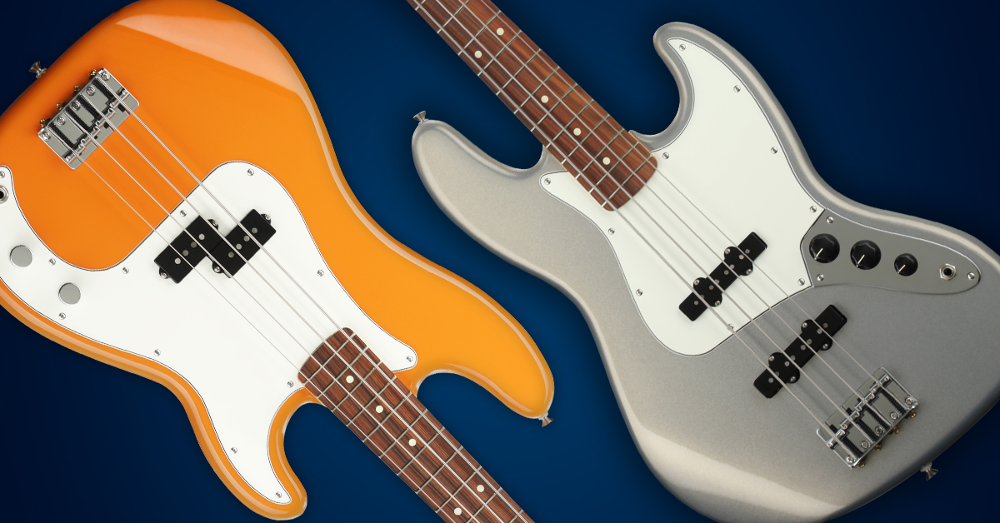
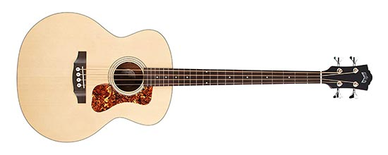
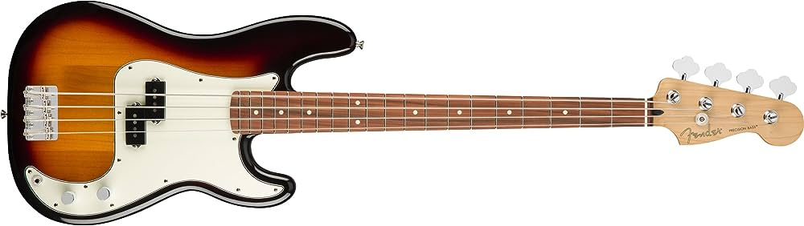
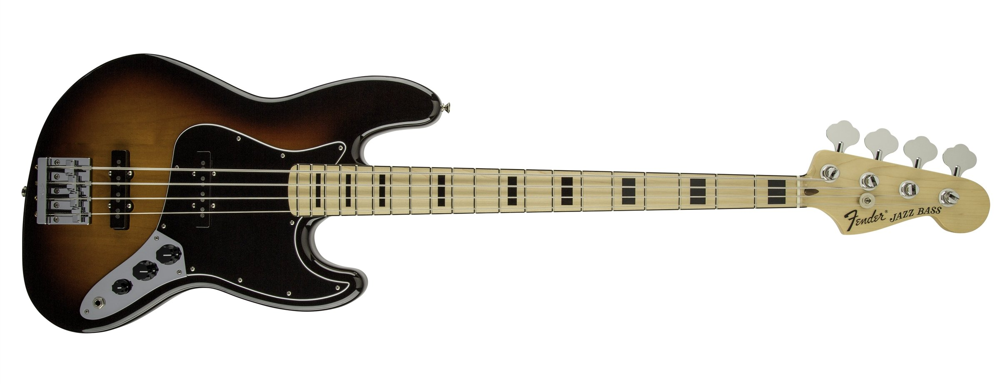

Different Types of Bass Guitars
The bass guitar is a fundamental instrument in most musical genres and bands. They can take on multiple different roles, but the key to a great bassist is consistency and timing. A bass’s main function is to hold up the low-end in the mix and keep the band playing in a tight rhythmic pattern. They come in many shapes and sizes, but usually, they’re a larger, longer version of an electric guitar with either four or five thick strings.
Acoustic Bass
A lot of people see acoustic basses as a mix between an upright bass in terms of sound and electric bass in terms of playability. While not strictly true, we are quite satisfied with this definition for the time being. Most of the techniques that you can do on a standard basis can be utilized on the acoustic also so the range of possibilities is vast.
Precision Bass
The P bass utilises a thick body and a chunky neck profile. Even new models hark back to mid 20th century designs because they tick all the boxes for retro style. The most prominent change made early on in its life was the ‘slab’ body being updated to feature more contours.
This is the bass you want for full-on power. The hum-cancelling split coil pickup provides a huge, full range tone that sits in a mix extremely well for a lot of styles of music. Saying that, it’s not really a versatile instrument. It does a good job for an old school, boomy sound but it doesn’t really cut it for super modern tones. It’s kind of a one-trick-pony, but it’s a great one nonetheless. Using a plectrum with this bass is ideal to get grunt out of the sound.
Jazz Bass
Most companies that make Jazz shapes equip it with single-coil pickups, making it an extremely versatile bass. You’ll get more treble and middle out of the sound than the P’s lower register. If you’re a fingerstyle or slap player, the Jazz will suit you.
While all newly-built P and J basses have modern ‘C’ shape necks, the Jazz neck tapers off to a slim 38mm nut width. This is unlike the P’s 43mm and consistent size down the whole neck. Ironically, the Jazz will generally offer more precision than a Precision.